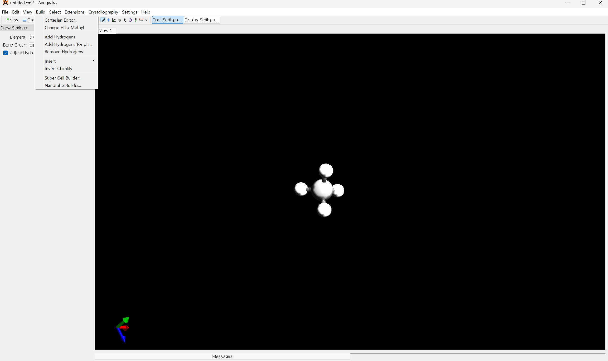
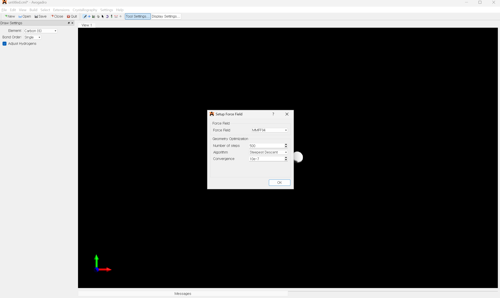
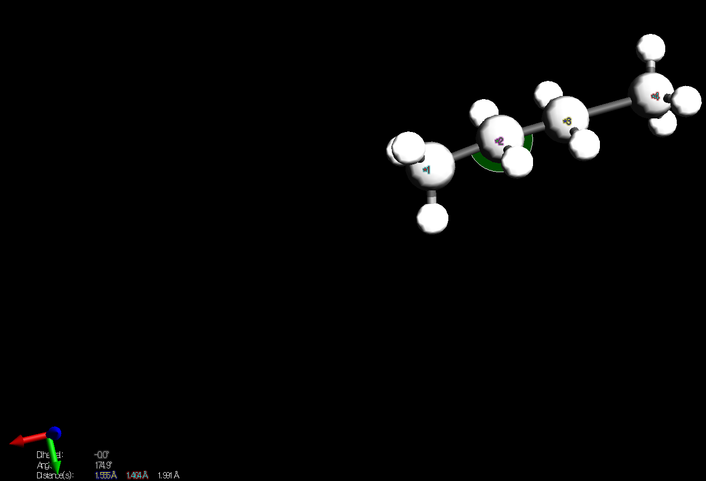
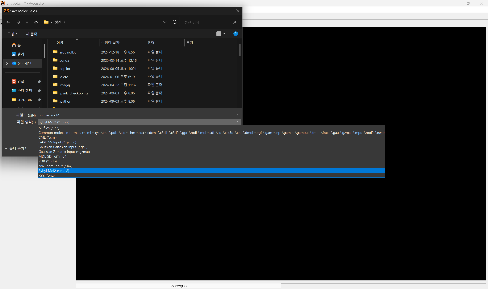
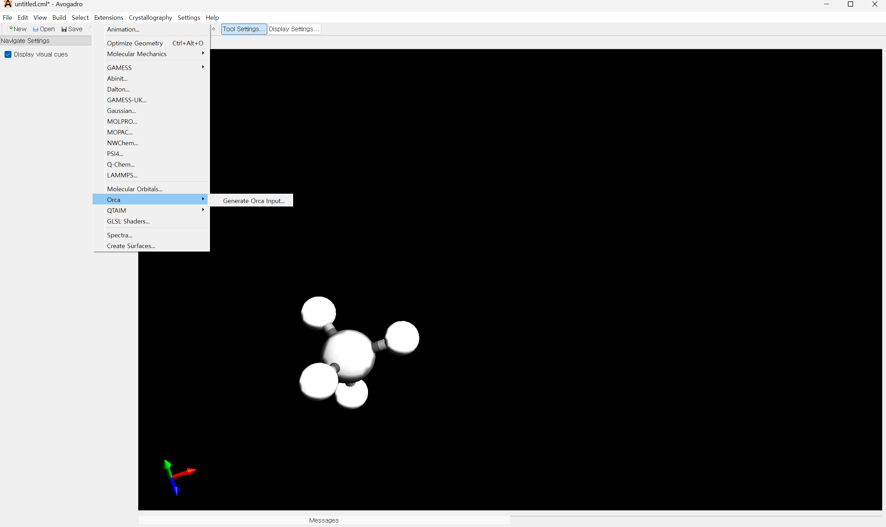
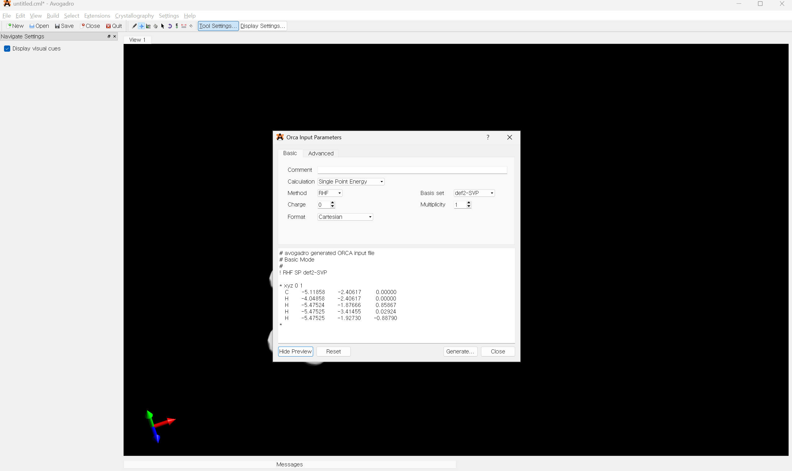

Avogadro
분자 구조를 직접 만들고 수정하며 3차원으로 확인하는 molecular editor입니다.
Overview → Quick Start → Common Problems 순서로 먼저 읽어도 됩니다.
Overview
Avogadro는 분자 구조를 직접 만들고 수정하며 3차원으로 확인할 수 있는 molecular editor입니다. ORCA 같은 계산 프로그램에 넘길 초기 구조를 준비할 때도 유용합니다.
분자 만들기와 수정
Draw Tool에서 원소와 bond order를 고르고 빈 공간을 클릭하거나 원자에서 드래그해 구조를 만들 수 있습니다. Adjust Hydrogens를 켜면 구조 변화에 따라 수소 수를 자동으로 조정합니다.
| 조작 | 기능 |
|---|---|
| 빈 공간 클릭 | 원자 생성 |
| 원자에서 드래그 | 새 원자와 결합 생성 |
| 기존 결합 클릭 | single → double → triple 변경 |
| 결합 우클릭 | 결합 삭제 |
Hydrogen
분자 전체의 수소를 추가하거나 제거할 수 있습니다.
Build → Add Hydrogens
Build → Remove Hydrogens
자동 수소 추가가 실제 pH 조건의 protonation state를 항상 정확히 결정해 주는 것은 아닙니다.
구조 최적화와 Force Field
Extensions → Optimize Geometry로 force field 기반 구조 정리를 수행할 수 있습니다. 세부 설정은 Extensions → Molecular Mechanics → Setup Force Field...에서 확인합니다.

| 확인된 Force Field | 입문 수준 설명 |
|---|---|
| GAFF | 유기분자에 활용 |
| Ghemical | 분자역학용 force field |
| MMFF94 / MMFF94s | 유기분자에 널리 사용 |
| UFF | 다양한 원소를 폭넓게 지원 |
Avogadro의 기본 구조 최적화는 분자역학적 최적화입니다. ORCA의 양자화학적 geometry optimization과 같은 계산이 아닙니다.
거리·각도·이면각 측정
툴바의 Click to Measure를 이용해 현재 구조의 기하 값을 읽을 수 있습니다.
| 선택 원자 수 | 표시 값 |
|---|---|
| 2 | 거리 (Å) |
| 3 | 각도 (°) |
| 4 | 이면각 (°) |

3D 화면을 우클릭하면 현재 측정 selection이 초기화됩니다.
파일 열기와 저장
File → Open, Save, Save As...로 구조를 불러오고 다른 형식으로 저장합니다.

| 형식 | 특징 |
|---|---|
| .xyz | 원자 종류와 좌표를 단순 저장 |
| .mol | 원자·결합 정보 포함 |
| .mol2 | 구조와 원자/결합 정보를 비교적 풍부하게 저장 |
| .pdb | 생체분자 구조에서 널리 사용 |
ORCA input 만들기
Avogadro 1.2.0에는 ORCA input generator가 있습니다.
Extensions → Orca → Generate Orca Input...

이 generator는 편리한 출발점이지만 ORCA 6.1.1의 모든 고급 옵션을 대신 설정하지는 않습니다. 생성된 input을 확인하는 습관이 필요합니다.
Quick Start
- Draw Tool로 간단한 유기분자를 작성합니다.
Adjust Hydrogens로 수소가 조정되는지 확인합니다.Extensions → Optimize Geometry를 실행합니다.Click to Measure로 거리 값을 확인합니다.Save As...에서 목적에 맞는 구조 형식으로 저장합니다.
3D 구조가 보이고, geometry가 정리되며, 거리 값과 저장 파일을 확인할 수 있습니다.
Common Problems
수소가 예상과 다르게 붙어요
총전하와 protonation/tautomer 상태를 별도로 확인하세요.
구조 최적화 후 모양이 이상해졌어요
현재 구조에 적절한 force field parameter가 있는지 확인하세요. 금속 착물이나 특수 결합은 특히 주의가 필요합니다.
다른 프로그램에서 파일이 제대로 안 열려요
확장자만 바꾸지 말고 해당 파일 형식이 보존하는 정보와 대상 프로그램의 요구 형식을 확인하세요.
Quick Reference
| 하고 싶은 일 | 메뉴·도구 |
|---|---|
| 분자 그리기 | Draw Tool |
| 수소 추가 | Build → Add Hydrogens |
| 구조 최적화 | Extensions → Optimize Geometry |
| Force Field 설정 | Extensions → Molecular Mechanics → Setup Force Field... |
| 거리·각도 측정 | Click to Measure |
| ORCA input 생성 | Extensions → Orca → Generate Orca Input... |